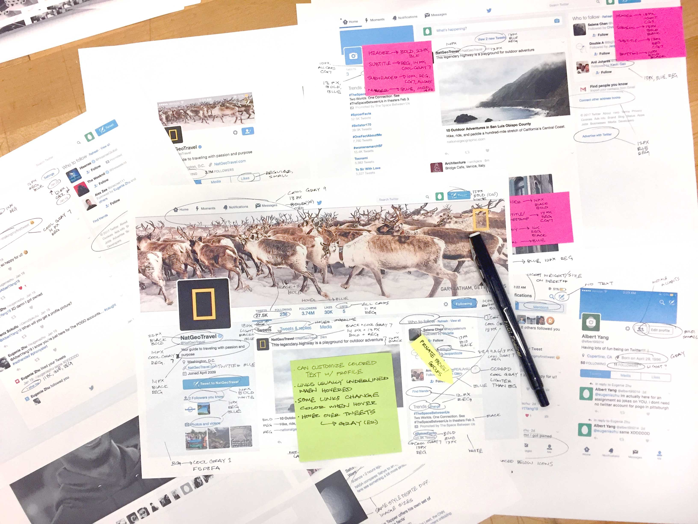
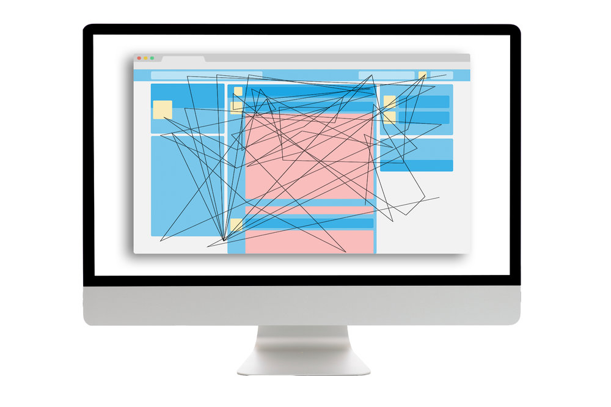
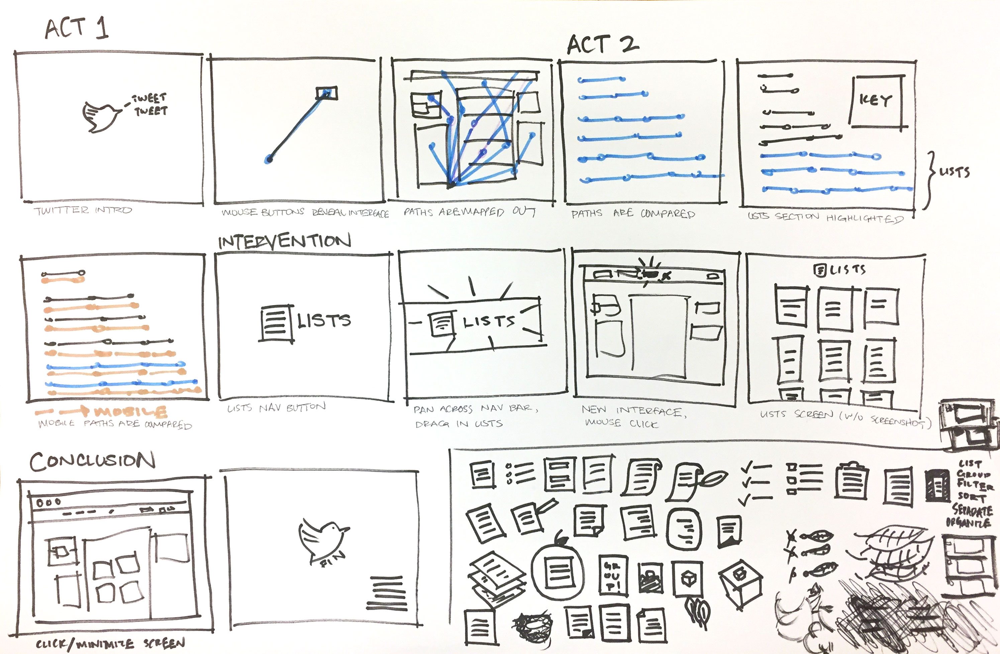

We looked at multiple social media sites, including Facebook, Instagram, Yelp, and Twitter. My part specifically was to look at the typography and visual hierarchy used on the each platform. Ultimately, we decided to look more into Twitter due to our less biased view since we had less experience on it. Our group looked into Twitter interactions with fresh eyes and as a result, had more honest experiences from first-time users.

Our method of gathering data involved tracking cursor movements and the number of clicks it takes to perform certain actions. These actions included posting a Tweet, following someone, creating a moment, and adding a person to a list, among many other site interactions. After tracing the actions and counting the clicks, we straightened out each path to visually present how long each task took. Our findings revealed that actions related to "Lists" and "Moments" took significantly longer than other categories. After looking into both of these categories, our group decided to explore interventions related to "Lists" due to what we believed to be an important, yet under-represented function on Twitter.


We created a storyboard on paper to help guide us through the process of making the video in AfterEffects. Within the storyboard, we divided the scenes between us, and later established a style guide so we could have a consistent visual style. The main contents of the storyboard involved how to present our poster visualization within an on-screen format, and how to reveal our intervention using motion graphics. While some scenes didn't make it into the final video, the storyboard was vital to understanding where we were in the project's many phases.
It was very challenging to apply what I know about visual hierarchy to something as complex as social media sites. While there are ways to grab your attention using color and type, it was tough figuring out what info was most important (if there was a "most important" aspect). I thought it was interesting that some social media platforms, such as Twitter and Facebook, emphasize the people behind the content, whereas others like Instagram focus more on the content (photos) itself. Overall, I'm pleased that I got to explore and expand upon my knowledge of what design decisions are made for social media sites, and how our group got to visualize our own data in both poster and video form. Our video could be more polished and smoother in terms of conveying our information, but I felt that it worked well with the poster that we presented our research findings with.